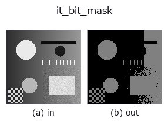

gray op• 資料種類:image → image
• 呼叫:fullseye.apply(img, "it_bit_mask", a=0.5, b=0.5)(2-D 的模型是一張圖 + 兩個純量旋鈕 a,b∈[0,1])
• HALCON 對應:bit_mask(其含義與參數可參考 HALCON 手冊)

*圖為在 128×128 合成輸入上實際執行的輸出。左為輸入，右為輸出。點雲以俯視散點顯示(亮度 = z)，一維序列為折線，體資料為沿 z 的最大值投影，影片為中間影格，複數影像為振幅；無法成像的回傳值直接顯示數值。*
掃描旋鈕 a(0.1 / 0.5 / 0.9，另一旋鈕取預設):
▸ it_bit_mask: knob a sweep (docs site)
*旋鈕 b 不改變輸出(實測: 0.1 / 0.5 / 0.9 相同)。*
換別的影像(合成場景 / 照片 / 硬幣。上排為輸入，下排為對應輸出。旋鈕取預設):
▸ it_bit_mask: other inputs (docs site)
*第 4 欄是彩色 (H,W,3) 輸入。此運算子能正確處理顏色而不跨通道(不把顏色通道當作第三個空間軸摺積)。*
bit_mask:將 8 位元影像與常數位元遮罩 round(a*255) 做邏輯 AND 運算。`b` 被忽略。
> 以下的詳細說明為原文 —— 摘要與標題已翻譯。
入力を [0,1] の 2 次元 float64 に揃えたあと `round(x*255)` で 0〜255 の
8 ビット整数に量子化し、定数マスク `m = round(a*255) & 0xFF(a` は
[0,1] に clip)と画素ごとにビット AND を取って、`/255` で [0,1] に戻す。
`a=1 でマスク 255(量子化以外は恒等)、a=0` でマスク 0(全零)、
`a=0.5` で 128(最上位ビットだけ残す=0.5 以上か否かの 2 値化と同じ)。
`b` は未使用。
返り値は入力と同形の float64、値は `k/255 の離散値。a` はビット
パターンとして効くので単調ではない: 0.5(=128)は最上位ビット、0.25 付近
(=64)は上から 2 番目のビットだけを残し、それぞれ独立した縞状の階調平面
(bit plane)が出る。「上位 n ビットを残す」なら `a = (256 - 2**(8-n))/255`
に選ぶ(n=2 で 192/255 ≈ 0.753)。カラー(3 次元)入力はチャネル平均で 2 次元に
落とされる。例外時は fail-soft で入力のクリップ版が返り、台帳に記録される。
ビットシフトは `it_bit_lshift / it_bit_rshift`、階調数の削減は
`it_convert_image_type`。透かし・ステガノグラフィの解析や量子化ノイズの
可視化(下位ビット平面の抽出)に。
• 範例資料目錄(下載 URL / 授權) —— 2-D 用 skimage.data(BSD/公有領域)加合成圖,3-D 給出真實資料源(Stanford/PDS 等)的下載 URL。
• 運算子來歷與參考文獻 —— 該運算子族所依據的研究/方法出處。
• 演算法的正典(作者・年份)與用途見上面的族使用指南。
下面的程式已確認可以執行(與圖相同的輸入)。在 Studio 說明中，此區塊會變成按鈕，可當場載入並執行。
it_bit_mask 0.50 0.50
▸ Load this pipeline · Load & run
• gallery2d_gray_arith — py -3.11 examples/gallery2d_gray_arith.py
image 作為輸入)identity · gaussian · mean_box · bilateral · unsharp · median · min_filter · max_filter
gray)gamma · invert · scale_clip · equalize · sigmoid · clahe · sk_adapthist · sk_enhance_contrast
*Provenance: ops.py — 2D 運算子登記表。本條目由 tools/opdocs.py md 自動產生(請勿手動編輯)。*
© 2026 Kazufumi Furuse — Fullseye operator documentation. Licensed under Apache-2.0.
{kind=link}
{kind=link}